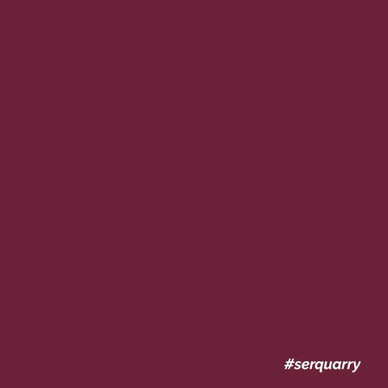
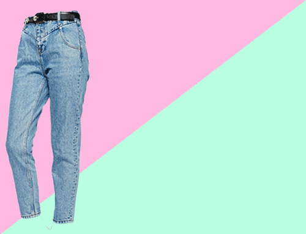
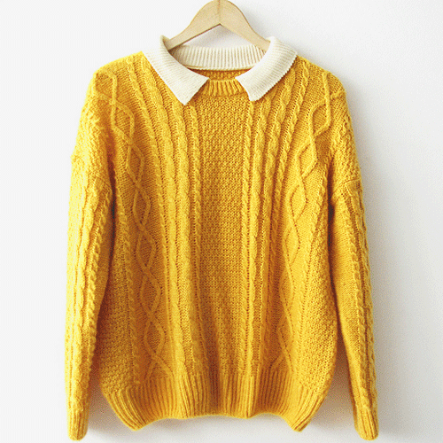
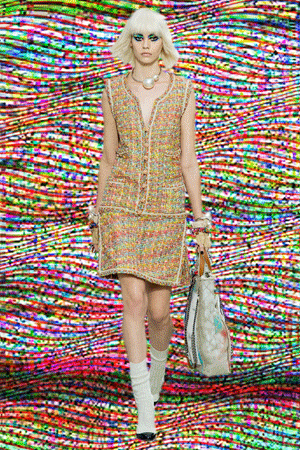
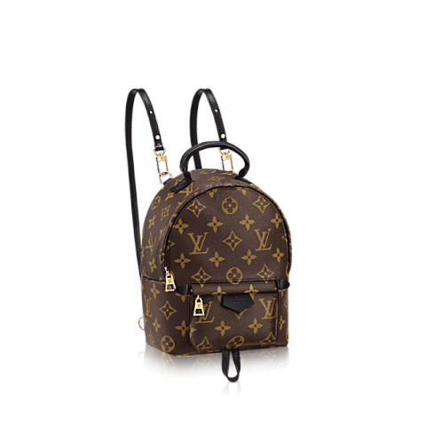
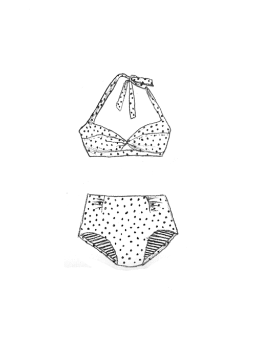

Bienvenidos a nuestra tienda, donde la moda y el estilo se encuentran en cada prenda.
Aquí tenemos una variedad de productos diseñados para resaltar tu personalidad
y hacer que te sientas increíble cada día.
| NOMBRE |
IMAGEN |
DESCRIPCIÓN |
TALLAS |
| PANTALONES |
 |
Nuestros pantalones están hechos para ofrecer comodidad y elegancia a la vez.
Desde opciones de corte clásico hasta los más modernos estilos de corte recto y ajustado,
cada modelo está pensado para adaptarse perfectamente a tu figura.
Disponemos de telas ligeras para el día a día y opciones más estructuradas para ocasiones especiales.
Los pantalones de lino y algodón son perfectos para los días más calurosos,
mientras que nuestros modelos de lana o mezclilla son ideales para climas frescos. |
|
| JEAN |
 |
Nada como unos buenos jeans, y en nuestra tienda encontrarás los más versátiles y cómodos.
Desde jeans skinny que te dan una figura estilizada, hasta los pantalones flare que están de vuelta para darle un toque retro a tu look.
Ofrecemos una amplia gama de lavados, desde el clásico denim oscuro hasta los desgastados y con detalles de roturas para quienes buscan un estilo más desenfadado.
Todos nuestros jeans están confeccionados con una mezcla perfecta de algodón y elastano para darte la flexibilidad que necesitas, sin perder la forma.
|
|
| BLUSAS |
 |
Las blusas en nuestra tienda son todo lo que necesitas para dar un giro elegante a cualquier outfit.
Ofrecemos una gran variedad de estilos, desde blusas de seda que son perfectas para una noche elegante,
hasta blusas de algodón para un look más casual y cómodo.
Las blusas con detalles de encaje y bordados son ideales para ocasiones especiales,
mientras que nuestras blusas básicas de manga larga o corta se convertirán en tu prenda esencial para todos los días. Además, tenemos opciones con escote en V, cuellos altos, y opciones sin mangas para diferentes gustos y temporadas.
|
|
| VESTIDOS |
 |
Si buscas elegancia y confort, nuestros vestidos son la opción perfecta.
Desde vestidos casuales para un día de campo hasta opciones más formales para bodas y eventos especiales.
Los vestidos cortos, en colores vibrantes o estampados florales, son ideales para días soleados,
mientras que los vestidos largos en tonos más neutros o metálicos son perfectos para la noche.
Nuestros vestidos están diseñados para resaltar tu figura, con cortes que favorecen a todas las formas,
y telas suaves que garantizan comodidad durante todo el día.
|
|
| ACCESORIOS |
 |
No podemos olvidar los detalles que hacen la diferencia. En nuestra tienda,
encontrarás accesorios que complementan cualquier look. Desde bolsos de mano en diferentes tamaños y estilos,
hasta bufandas, sombreros y cinturones que añaden personalidad a tu atuendo.
También tenemos una línea exclusiva de joyería, con collares, pulseras y anillos que te permiten expresar tu estilo único. Y si eres fan de las gafas de sol,
tenemos modelos para todos los gustos: desde los más clásicos hasta los más modernos y atrevidos.
|
No Aplica |
| ROPA INTERIOR |
 |
La ropa interior es una parte esencial del vestuario diario, ya que no solo proporciona comodidad,
sino que también define el ajuste y la forma de nuestra ropa exterior. En nuestra tienda,
ofrecemos una amplia gama de prendas de ropa interior pensadas para brindarte soporte,
suavidad y estilo en cada ocasión.
|
|